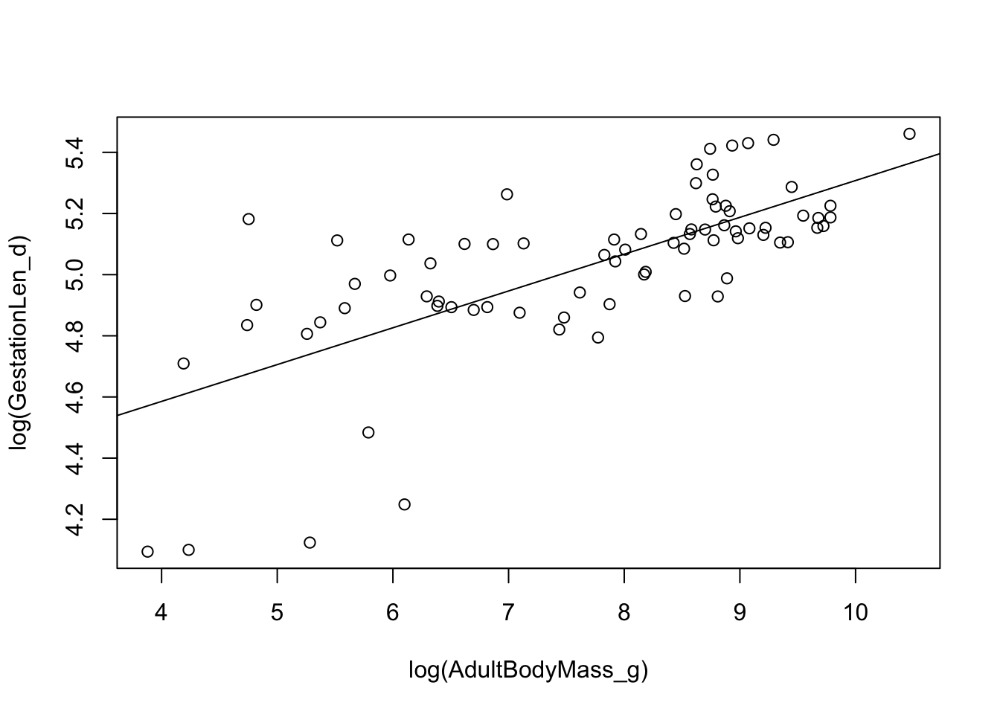
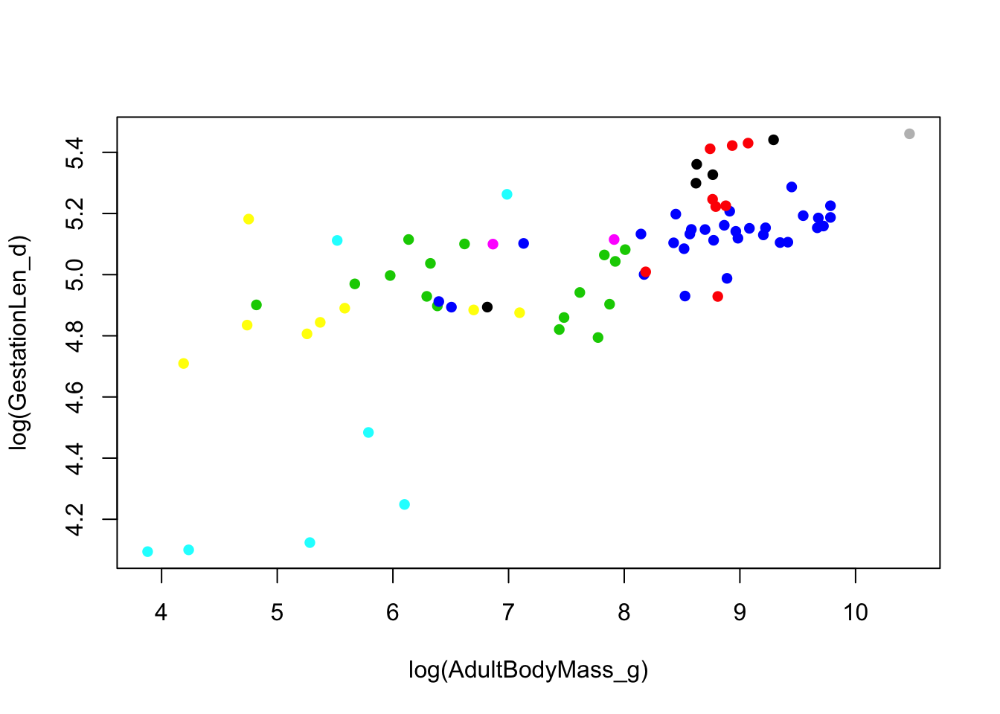
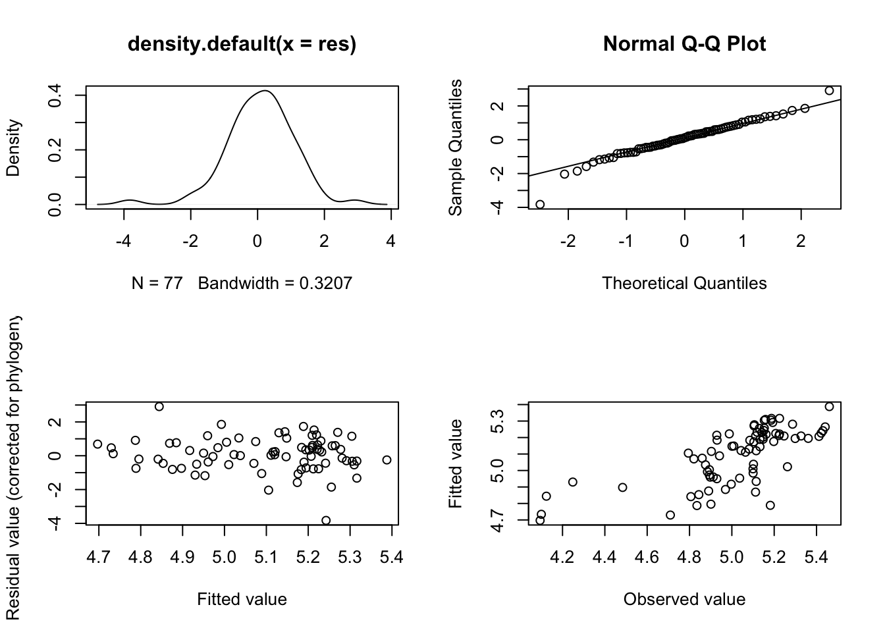

Practical 5 Phylogenetic Generalised Least Squares (PGLS) in R
The aims of this practical are to learn how to use R to perform Phylogenetic Generalised Least Squares (PGLS) analyses, and to estimate phylogenetic signal.
We will be using the evolution of primate life-history variables as an example. These data come from the PanTHERIA database (Jones et al. 2009) and 10kTrees (Arnold et al. 2010). Note that this is an old version of 10kTrees, so if you want to use it in your research please download the newest version.
REMEMBER
- Download all of the data for the practical into a folder somewhere on your computer.
- Set your working directory to this folder.
- Start a new script for this practical.
You will also need to install the following packages:
apegeigerpicantecaper
5.1 Preparing for the analysis
5.1.1 Load the required packages
To begin we need to load the packages for this practical.
library(ape)
library(geiger)
library(picante)
library(caper)5.1.2 Reading and checking your data in R
The data are in a comma-delimited text file called Primatedata.csv. Load these data as follows. I am assuming you have set your working directory.
primatedata <- read.csv("Primatedata.csv")Check everything loaded correctly:
str(primatedata)## 'data.frame': 77 obs. of 9 variables:
## $ Order : Factor w/ 1 level "Primates": 1 1 1 1 1 1 1 1 1 1 ...
## $ Family : Factor w/ 15 levels "Aotidae","Atelidae",..: 2 2 2 14 3 3 3 4 4 4 ...
## $ Binomial : Factor w/ 77 levels "Alouatta palliata",..: 5 6 7 8 9 10 11 15 16 17 ...
## $ AdultBodyMass_g: num 6692 7582 8697 958 558 ...
## $ GestationLen_d : num 138 226 228 164 154 ...
## $ HomeRange_km2 : num 2.28 0.73 1.36 0.02 0.32 0.02 0.00212 0.51 0.16 0.24 ...
## $ MaxLongevity_m : num 336 328 454 304 215 ...
## $ SocialGroupSize: num 14.5 42 20 2.95 6.85 ...
## $ SocialStatus : int 2 2 2 2 2 2 2 2 2 2 ...As you can see, the data contains the following variables: Order, Family, Binomial, AdultBodyMass_g, GestationLen_d, HomeRange_km2, MaxLongevity_m, and SocialGroupSize.
5.1.3 Reading and checking your phylogeny in R
To load a tree you need either the function read.tree or read.nexus. read.tree can deal with a number of different types of data (including DNA) whereas read.nexus reads NEXUS files. We will use a NEXUS file of the consensus tree from 10kTrees.
primatetree <-read.nexus("consensusTree_10kTrees_Version2.nex")Let’s examine the tree by typing:
primatetree##
## Phylogenetic tree with 226 tips and 221 internal nodes.
##
## Tip labels:
## Allenopithecus_nigroviridis, Cercopithecus_ascanius, Cercopithecus_cephus, Cercopithecus_cephus_cephus, Cercopithecus_cephus_ngottoensis, Cercopithecus_diana, ...
##
## Rooted; includes branch lengths.str(primatetree)## List of 4
## $ edge : int [1:446, 1:2] 227 228 229 230 231 232 233 234 234 235 ...
## $ edge.length: num [1:446] 4.95 17.69 19.65 8.12 4.82 ...
## $ Nnode : int 221
## $ tip.label : chr [1:226] "Allenopithecus_nigroviridis" "Cercopithecus_ascanius" "Cercopithecus_cephus" "Cercopithecus_cephus_cephus" ...
## - attr(*, "class")= chr "phylo"
## - attr(*, "order")= chr "cladewise"# It's usually a good idea to quickly plot the tree too
plot(primatetree, cex = 0.2, typ = "fan")
primatetree is a fully resolved tree with branch lengths. There are 226 species and 221 internal nodes.
Most R functions require your tree to be dichotomous, i.e. to have no polytomies. To check whether your tree is dichotomous use is.binary.tree. If this is FALSE, use multi2di to make the tree dichotomous. This function works by randomly resolving polytomies with zero-length branches.
is.binary.tree(primatetree) # We want this to be TRUE## [1] FALSEprimatetree <- multi2di(primatetree)Most functions also require the tree to be rooted, i.e., to have one taxon designated as the outgroup. Our tree is rooted but if you wanted to change the root, or root an unrooted tree use root. Note that here I’ve just chosen a random species Saimiri sciureus to be the root.
primatetree.reroot <- root(primatetree, "Saimiri_sciureus")
plot(primatetree.reroot, cex = 0.2)
5.1.4 Manipulating your data and phylogeny in R
5.1.4.1 Species names with spaces
Species names in the tree cannot contain spaces so they are generally written as Genus_species (the gap between the genus name and species name replaced by an underscore _). If the species names in the data are written as Genus species with a space, then you will have to replace the spaces with _ so that they match up with the species names in the tree. You can do this as follows:
primatedata$Binomial <- gsub(" ", "_", primatedata$Binomial)gsub means general substitution. It replaces any instance of the first item (here it’s a space) with the second item (_) but only in the variable you tell it to (primatedata$Binomial).
5.1.4.2 Mismatches between species in your data and phylogeny
Often you will have data for species which are not in your phylogeny and/or species in your phylogeny which are not in your data. Some functions in R can deal with this, others will produce an error telling you the tree and data do not match (e.g. most ape functions). It’s useful to know how to deal with this so I have provided code below.
Note that the caper function comparative.data (see below) matches up species names in the tree and data for you before you run any analyses. All geiger functions match the tree and the data too. However, these functions are only as good as their inputs. If you have even slightly misspelled a species name in the tree or the data it will automatically be dropped from the analyses. It is therefore very important to check this before running an analysis.
First we can use the function name.check to find out which names do not match.
check <- name.check(phy = primatetree, data = primatedata, data.names = primatedata$Binomial)You can look at check by printing it, I won’t do this here as it produces a lot of output but take a look on your computer.
checkcheck has two parts, tree_not_data for species in the tree but not in the dataset, and data_not_tree for species in the dataset but not in the tree.
We can remove species missing from the tree easily using drop.tip as we did above. You need to list the species which you do not want to select and then drop them from the tree instead of selecting the species you do want.
primatetree <- drop.tip(primatetree, check$tree_not_data)In this case we don’t have any species in the tree missing from the data, data_not_tree contains no species. However, if you do, to remove species from the data which are not in the tree you can use match and subset as follows:
matches <- match(primatedata$Binomial, check$data_not_tree, nomatch = 0)
primatedata <- subset(primatedata, matches == 0)== means equals. So this line of code selects species which do appear in the data_not_tree list of species, i.e. their value from matches is 0.
Always check this has worked as expected by checking the data and the phylogeny. In the first instance you can just use str to make sure you have the expected number of species in each:
str(primatedata)## 'data.frame': 77 obs. of 9 variables:
## $ Order : Factor w/ 1 level "Primates": 1 1 1 1 1 1 1 1 1 1 ...
## $ Family : Factor w/ 15 levels "Aotidae","Atelidae",..: 2 2 2 14 3 3 3 4 4 4 ...
## $ Binomial : chr "Ateles_belzebuth" "Ateles_geoffroyi" "Ateles_paniscus" "Callicebus_moloch" ...
## $ AdultBodyMass_g: num 6692 7582 8697 958 558 ...
## $ GestationLen_d : num 138 226 228 164 154 ...
## $ HomeRange_km2 : num 2.28 0.73 1.36 0.02 0.32 0.02 0.00212 0.51 0.16 0.24 ...
## $ MaxLongevity_m : num 336 328 454 304 215 ...
## $ SocialGroupSize: num 14.5 42 20 2.95 6.85 ...
## $ SocialStatus : int 2 2 2 2 2 2 2 2 2 2 ...str(primatetree)## List of 4
## $ edge : int [1:152, 1:2] 78 79 80 81 82 83 84 85 86 87 ...
## $ edge.length: num [1:152] 4.95 17.69 19.65 8.12 4.82 ...
## $ Nnode : int 76
## $ tip.label : chr [1:77] "Cercopithecus_ascanius" "Cercopithecus_cephus" "Cercopithecus_mitis" "Cercopithecus_neglectus" ...
## - attr(*, "class")= chr "phylo"
## - attr(*, "order")= chr "cladewise"5.2 Ordinary least squares (OLS) regression
Before we use phylogenetic comparative methods, we will quickly do an ordinary least squares (OLS) regression. Let’s assume that we’re interested in the relationship between primate body mass and gestation length. First we should look at the data. Note that both variables are highly skewed so we need to log transform them. Also note that the function log in R is actually natural log, not log10. And for fun let’s make everything rainbow colored!
par(mfrow = c(2,2)) # So we can see 4 plots at once
# Raw data
hist(primatedata$AdultBodyMass_g, col = rainbow(8))
hist(primatedata$GestationLen_d, col = rainbow(8))
# Log transformed
hist(log(primatedata$AdultBodyMass_g), col = rainbow(8))
hist(log(primatedata$GestationLen_d), col = rainbow(8))
par(mfrow = c(1,1)) # So we can go back to 1 plotOK let’s do a linear regression of log gestation length against log adult body mass:
model.ols <- lm(log(GestationLen_d) ~ log(AdultBodyMass_g), data = primatedata)
summary(model.ols)##
## Call:
## lm(formula = log(GestationLen_d) ~ log(AdultBodyMass_g), data = primatedata)
##
## Residuals:
## Min 1Q Median 3Q Max
## -0.61614 -0.08279 0.00646 0.11414 0.50558
##
## Coefficients:
## Estimate Std. Error t value Pr(>|t|)
## (Intercept) 4.1037 0.1108 37.042 < 2e-16 ***
## log(AdultBodyMass_g) 0.1204 0.0141 8.544 1.1e-12 ***
## ---
## Signif. codes: 0 '***' 0.001 '**' 0.01 '*' 0.05 '.' 0.1 ' ' 1
##
## Residual standard error: 0.1977 on 75 degrees of freedom
## Multiple R-squared: 0.4933, Adjusted R-squared: 0.4865
## F-statistic: 73.01 on 1 and 75 DF, p-value: 1.097e-12The slope is positive (0.1204 ± 0.0141), and very significant (note that R can’t display values lower than <2e-16 which is why it shows up so often).
We can also plot the regression line on a scatter plot:
plot(log(GestationLen_d) ~ log(AdultBodyMass_g), data = primatedata)
abline(model.ols)
We can look at the phylogenetic pseudoreplication problem on the graph by colouring the points by family.
plot(log(GestationLen_d) ~ log(AdultBodyMass_g), data = primatedata, col = primatedata$Family, pch = 16)
5.3 Phylogenetic generalized least squares models (PGLS)
There are several ways of accounting for phylogenetic non independence in your analyses. Here we will just cover one - phylogenetic generalized least squares (PGLS). Another popular earlier method is independent contrasts. This method is really similar to PGLS, in fact it is just a special kind of PGLS where \(\lambda\) is equal to 1. PGLS offers some important advantages over independent contrasts. The model of trait evolution can be more flexible i.e., it can depart from a strict Brownian motion process (\(\lambda\) or K = 1). Different scaling parameters (\(\lambda\), \(\kappa\), and \(\delta\)) can be incorporated in the analysis, which can significantly improve the fit of the data to the model and thus also improve the estimation of the trait correlation. Another advantage of PGLS is that the intercept of the regression is not forced to be zero.
To perform PGLS models in R, caper requires you to first combine the phylogeny and data into one object using the function comparative.data.
Note that vcv = TRUE stores a variance covariance matrix of your tree (you will need this for the pgls function). na.omit = FALSE stops the function from removing species without data for all variables. warn.dropped = TRUE will tell you if any species are not in both the tree and the data and are therefore dropped from the comparative data object. Here we won’t drop any species because we already did this using name.check.
primate <- comparative.data(phy = primatetree, data = primatedata,
names.col = Binomial, vcv = TRUE,
na.omit = FALSE, warn.dropped = TRUE)If you do need to drop species, this function will give a warning telling you that some species have been dropped. You can view the dropped species using:
primate$dropped$tips## character(0)primate$dropped$unmatched.rows## character(0)Always make sure you check the list of dropped species is what you expected, it often reveals typos in your species names, or mismatches in taxonomies used etc.
The function for PGLS analyses in caper is pgls. To fit a model which uses the Maximum Likelihood (ML) estimate of \(\lambda\) we use the following code:
model.pgls <- pgls(log(GestationLen_d) ~ log(AdultBodyMass_g), data = primate, lambda = "ML")
summary(model.pgls)##
## Call:
## pgls(formula = log(GestationLen_d) ~ log(AdultBodyMass_g), data = primate,
## lambda = "ML")
##
## Residuals:
## Min 1Q Median 3Q Max
## -0.098899 -0.011661 0.003082 0.017758 0.075133
##
## Branch length transformations:
##
## kappa [Fix] : 1.000
## lambda [ ML] : 0.892
## lower bound : 0.000, p = 1.1435e-14
## upper bound : 1.000, p = 0.00046393
## 95.0% CI : (0.753, 0.967)
## delta [Fix] : 1.000
##
## Coefficients:
## Estimate Std. Error t value Pr(>|t|)
## (Intercept) 4.290229 0.160355 26.7546 < 2.2e-16 ***
## log(AdultBodyMass_g) 0.104864 0.019628 5.3426 9.479e-07 ***
## ---
## Signif. codes: 0 '***' 0.001 '**' 0.01 '*' 0.05 '.' 0.1 ' ' 1
##
## Residual standard error: 0.0261 on 75 degrees of freedom
## Multiple R-squared: 0.2757, Adjusted R-squared: 0.266
## F-statistic: 28.54 on 1 and 75 DF, p-value: 9.479e-07As well as the standard regression outputs, the output includes the estimated ML value of \(\lambda\) (0.892) and p values from likelihood ratio tests showing whether the ML \(\lambda\) is significantly different from 0 or 1. \(\kappa\) and \(\delta\) are also tree transformations which can improve the fit of the data to the tree. It is also possible to use pgls to optimise \(\kappa\) or \(\delta\) (using kappa = “ML” or delta = “ML” instead of lambda = “ML” in the code above). We will not cover this today. Note that optimizing more than one of these parameters at the same time is not advisable because it would be impossible to interpret the results!
We can also plot the results as follows:
plot(log(GestationLen_d) ~ log(AdultBodyMass_g), data = primatedata)
abline(model.pgls)
Sometimes you will find that pgls will not work and you get an optim error. This is much more common when using a Mac. To fix it all you need to do is change the bounds (upper and lower values) on the parameter being optimized, in this case \(\lambda\). Just change the lower bound of \(\lambda\) to something a little bigger than 1e-6 until it works. For example:
model.pgls2 <- pgls(log(GestationLen_d) ~ log(AdultBodyMass_g), data = primate, lambda = "ML", bounds = list(lambda = c(1e-05, 1)))5.3.1 Likelihood profiles for \(\lambda\) in PGLS models
You can look at the likelihood profiles for branch length transformations in PGLS models using pgls.profile:
lambda.profile <- pgls.profile(model.pgls, "lambda")
plot(lambda.profile)
This graph shows the likelihood profile of \(\lambda\) in our model. Ideally you want a line with an obvious peak/optimum like this, rather than a flat line which would suggest \(\lambda\) could be anything. You can see that the optimum (the peak of the curve) is at 0.892 as estimated in our PGLS model. The dotted red lines are the 95% confidence intervals on \(\lambda\) for our model. pgls.confint prints out these numbers in $ci.val
pgls.confint(model.pgls, "lambda")$ci.val## [1] 0.753434 0.966543Big problems with small datasets You will often find strange \(\lambda\) profiles when you don’t have a lot of species in your data, because \(\lambda\) (and Blomberg’s K - see below) has very low power to detect phylogenetic signal for less than 20-30 data points (see Freckleton et al. 2002 Am Nat). This means that using PGLS on small datasets is tricky - you almost always get ML \(\lambda\) of zero but the \(\lambda\) profile will show a pretty flat likelihood surface. Unfortunately people often forget to look at the \(\lambda\) profile so erroneously conclude that there is no phylogenetic autocorrelation in their data.
Generally I’d say don’t use small datasets, however, this seems unavoidable in some fields. Therefore my advice is to (only in this situation!) ignore one of Freckleton’s deadly sins (2009, JEB) and report the results from an OLS model (equivalent of PGLS with \(\lambda\) = 0) and also report the results from a PGLS model with \(\lambda\) set to 1 (equivalent to independent contrasts). This problem comes up every year and current consensus among the PCM community is that this is best solution at present, if collecting more data is really not an option!
To set \(\lambda\) to 1 you just replace “ML” with 1
model.pgls3 <- pgls(log(GestationLen_d) ~ log(AdultBodyMass_g), data = primate, lambda = 1)5.3.2 Model diagnostics for PGLS models
You should always check model diagnostic plots whenever you fit a model in R to check that your data meet the assumptions of the model. The method for this in PGLS is the same for OLS, independent contrasts and PGLS models (though the graphs are slightly different). To get model diagnostic plots for PGLS:
par(mfrow = c(2, 2))
plot(model.pgls)
par(mfrow = c(1, 1))Without going into the statistical details (and if you’ve no idea what these plots are for I suggest looking this up online or in a stats textbook), what you are looking for in these plots is:
- In plot one you shouldn’t see any data with a studentized residual > \(\pm\) 3. Any species with such large residuals should be removed as these outliers may overly influence the results of the regression (see Jones and Purvis 1997). Often these are the result of measurement error associated with species pairs joined by very short branches. You should generally report results with and without outliers unless the results remain qualitatively the same.
- The points of the Q-Q plot (plot 2) should approximately fall on the line. This tests for normality of residuals, one of the assumptions of linear models
- Plots 3 and 4 should show a fairly random scattering of points. You want to avoid any clear patterns. The first is related to the systematic component of the model - any pattern here suggests that the model has not been correctly specified. The second is to test the assumption that variances are equal (homoscedascity).
It takes practice to know what is “good”, “bad” and “acceptable” with these plots. I would say the plots above are fine, but there appear to be a couple of data points with studentized residuals > \(\pm\) 3 in plot 1 that should be removed, or at least checked for errors.
5.4 Estimating phylogenetic signal for one variable
5.4.1 Pagel’s \(\lambda\) (Pagel 1997/1999, Freckleton et al 2002)
Phylogenetic signal is merely the pattern where close relatives have more similar trait values than more distant relatives (see Kamilar and Cooper 2013). Often people will mention that they “corrected for phylogeny” because of the phylogenetic signal in their variables. However, we do not correct for phylogeny because our variables show phylogenetic signal. We account for phylogenetic non-independence because the residuals from our models show phylogenetic signal (see Revell 2010). \(\lambda\) shown in PGLS models above is the \(\lambda\) for the model residuals not the individual variables.
Sometimes however, you might be interested in the phylogenetic signal of just one trait. \(\lambda\) is really easy to estimate using caper. To do this for log GestationLen_d:
lambdaGL <- pgls(log(GestationLen_d) ~ 1, data = primate, lambda = "ML")
summary(lambdaGL)##
## Call:
## pgls(formula = log(GestationLen_d) ~ 1, data = primate, lambda = "ML")
##
## Residuals:
## Min 1Q Median 3Q Max
## -0.128354 -0.014460 0.001389 0.017572 0.074329
##
## Branch length transformations:
##
## kappa [Fix] : 1.000
## lambda [ ML] : 0.948
## lower bound : 0.000, p = < 2.22e-16
## upper bound : 1.000, p = 0.030039
## 95.0% CI : (0.859, 0.996)
## delta [Fix] : 1.000
##
## Coefficients:
## Estimate Std. Error t value Pr(>|t|)
## (Intercept) 5.00514 0.11723 42.694 < 2.2e-16 ***
## ---
## Signif. codes: 0 '***' 0.001 '**' 0.01 '*' 0.05 '.' 0.1 ' ' 1
##
## Residual standard error: 0.0334 on 76 degrees of freedom
## Multiple R-squared: 0, Adjusted R-squared: 0
## F-statistic: NaN on 0 and 76 DF, p-value: NANote that by replacing the explanatory variables with 1 you are just investigating the relationship between log gestation length and the phylogeny. Thus the \(\lambda\) value is the \(\lambda\) estimate for log GestationLen_d and the p values are from likelihood ratio tests showing whether the ML \(\lambda\) is significantly different from 0 (no phylogenetic signal) or 1 (the expectation under Brownian motion).
5.4.2 Blomberg’s K (Blomberg et al 2003)
To estimate Blomberg’s K we use the Kcalc function in picante. First you need to set up a new vector with the values for the variable you are interested in, here the log of gestation length, and with a names attribute with the names of your species. Here I’ll call this vector lngest.
lngest <- log(primatedata$GestationLen_d)
names(lngest) <- primatedata$BinomialWe can then calculate K for log gestation length:
Kcalc(lngest[primatetree$tip.label], primatetree)## [,1]
## [1,] 0.7757771Kcalc (and phylosignal) require the trait data to be in the same order as the tree tip labels. lngest[primatetree$tip.label] selects gestation lengths from the species in the same order as they are in the tree (square brackets [ ] are used in R to subset data).
K for log gestation length is 0.7758. As with \(\lambda\) above, we’re interested in whether the value of K is significantly different from what we’d expect by chance. We can do this using the function phylosignal. This function randomly assigns the trait values to the species and then calculates K. This is repeated 1000 times (if reps = 1000) and the observed value of K is then compared to the randomized values to determine its significance.
phylosignal(lngest[primatetree$tip.label], primatetree, reps = 1000)## K PIC.variance.obs PIC.variance.rnd.mean PIC.variance.P
## 1 0.7757771 0.001660764 0.01212746 0.000999001
## PIC.variance.Z
## 1 -2.284663In this case the observed K is significantly higher than the random values of K (PIC.variance.P < 0.001).
Note this is a randomization test so your output here will not be identical to mine.
5.5 References
- Arnold, C., L. J. Matthews, and C. L. Nunn. 2010. The 10ktrees website: a new online resource for primate phylogeny. Evolutionary Anthropology: Issues, News, and Reviews 19:114–118.
- Blomberg, S. P., T. Garland, and A. R. Ives. 2003. Testing for phylogenetic signal in comparative data: behavioral traits are more labile. Evolution 57:717–745.
- Freckleton, R. P., P. H. Harvey, and M. Pagel. 2002. Phylogenetic analysis and comparative data: a test and review of evidence. The American Naturalist 160:712-726.
- Freckleton, R. P. (2009) The seven deadly sins of comparative analysis. Journal of Evolutionary Biology, 22, 1367–1375.
- Jones, K. E., J. Bielby, M. Cardillo, S. A. Fritz, J. O’Dell, C. D. L. Orme, K. Safi, W. Sechrest, E. H. Boakes, C. Carbone, et al. 2009. Pantheria: a species-level database of life history, ecology, and geography of extant and recently extinct mammals: Ecological archives e090-184. Ecology 90:2648–2648.
- Kamilar, J. M., & Cooper, N. 2013. Phylogenetic signal in primate behaviour, ecology and life history. Phil. Trans. R. Soc. B, 368(1618), 20120341.
- Pagel, M. 1999. Inferring the historical patterns of biological evolution. Nature, 401(6756), 877-884.
- Revell, L. J. 2010. Phylogenetic signal and linear regression on species data. Methods in Ecology and Evolution, 1, 319-329.
5.5.1 Extra Reading
- Losos, J.B. (2011) Seeing the forest for the trees: the limitations of phylogenies in comparative biology. The American Naturalist, 177, 709–727.